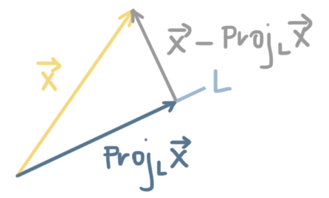
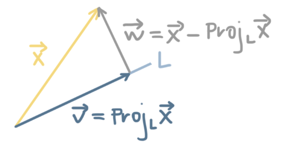
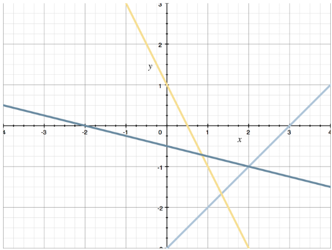

Linear Algebra, King Pt. 5
Orthogonality and Change of Basis
If a set of vectors $V$ is a subspace of $\mathbb{R}^n$, then the orthogonal complement of $V$, called $V^{\bot}$, is a set of vectors where every vector in $V^{\bot}$ is orthogonal to every vector in $V$. The $\bot$ symbol means perpendicular.
If we're saying that $V$ is a set of vectors $\overrightarrow{v}$, and $V^{\bot}$ is a set of vectors $\overrightarrow{x}$, then every $\overrightarrow{v}$ will be orthogonal to every $\overrightarrow{x}$ (and vice versa), which means their dot product is $0$.
So we could express the set of vectors $V^{\bot}$ as:
$V^{\bot} = \{ \overrightarrow{x} \in \mathbb{R}^n | \overrightarrow{x} \cdot \overrightarrow{v} = 0 \text{ for every } \overrightarrow{v} \in V \}$
This tells us that $V^{\bot}$ is all of the $\overrightarrow{x}$ in $\mathbb{R}^n$ that satisfy $\overrightarrow{x} \cdot \overrightarrow{v} = 0$, for every vector $\overrightarrow{v}$ in $V$, which is $V^{\bot}$'s orthogonal complement.
Defining the orthogonal complement expands the idea of orthogonality from individual vectors to entire subspaces of vectors. So two individual vectors are orthogonal complements when every vector in one subspace is orthogonal to every vector in the other subspace.
Example:
Describe the orthogonal complement of $V$, $V^{\bot}$.
$ V = span \left( \begin{bmatrix} 1 \\ -3 \\ 2 \\ \end{bmatrix} , \begin{bmatrix} 0 \\ 1 \\ 1 \\ \end{bmatrix} \right) $
The subsapce $V$ is a plane in $\mathbb{R}^3$, spanned by the two vectors $\overrightarrow{v_1} = (1,-3,2)$ and $\overrightarrow{v_2} = (0,1,1)$. Its orthogonal complement $V^{\bot}$ is the set of vectors which are orthogonal to those.
$ V^{\bot} = \biggl\{ \overrightarrow{x} \in \mathbb{R}^3 | \overrightarrow{x} \cdot \begin{bmatrix} 1 \\ -3 \\ 2 \\ \end{bmatrix} = 0 \text{ and } \overrightarrow{x} \cdot \begin{bmatrix} 0 \\ 1 \\ 1 \\ \end{bmatrix} = 0 \biggr\} $
If we let $\overrightarrow{x} = (x_1, x_2, x_3)$, we get two equations from these dot products.
$x_1 - 3x_2 + 2x_3 = 0$
$x_2 + x_3 = 0$
Put these equations into an augmented matrix.
$ \begin{bmatrix} 1 & -3 & 2 & | & 0 \\ 0 & 1 & 1 & | & 0 \\ \end{bmatrix} $
Then put it into rref.
$ \begin{bmatrix} 1 & 0 & 5 & | & 0 \\ 0 & 1 & 1 & | & 0 \\ \end{bmatrix} $
The rref form gives the system of equations:
$x_1 + 5x_3 = 0$
$x_2 + x_3 = 0$
and we can solve the system for the pivot variables. The pivot entries we found were for $x_1$ and $x_2$, so we'll solve the system for $x_1$ and $x_2$.
$x_1 = -5x_3$
$x_2 = -x_3$
So we could also express the system as:
$ \begin{bmatrix} x_1 \\ x_2 \\ x_3 \\ \end{bmatrix} = \begin{bmatrix} -5 \\ -1 \\ 1 \\ \end{bmatrix} $
which means the orthogonal complement is:
$ V^{\bot} = span \left( \begin{bmatrix} -5 \\ -1 \\ 1 \\ \end{bmatrix} \right) $
$V^{\bot}$ is a subspace, closed under addition and scalar multiplication.
In the same way that transposing a transpose gets you back to the original matrix, $(A^T)^T = A$, the orthogonal complement of the orthogonal complement is the original subspace.
$(V^{\bot})^{\bot} = V$
The orthogonal complement of $V^{\bot}$ will be $V$.
Orthogonal Complements of the Fundamental Subspaces
We learned about four fundamental subspaces, defined for any matrix $A$ and its transpose $A^T$.
- The column space $C(A)$, made of the column vectors of $A$
- The null space $N(A)$, made of the vectors $\overrightarrow{x}$ that satisfy $A \overrightarrow{x} = \overrightarrow{O}$
- The row space $C(A^T)$, made of the column vectors of $A^T$, which are also the row vectors of $A$
- The left null space $N(A^T)$, made of the vectors $\overrightarrow{x}$ that satisfy $\overrightarrow A = \overrightarrow{O}$
Orthogonality of the Fundamental Subspaces
We can state two important facts:
- The null space $N(A)$ and row space $C(A^T)$ are orthogonal complements, $N(A) = (C(A^T))^{\bot}$, or $(N(A))^{\bot} = C(A^T)$
- The left null space $N(A^T)$ and column space $C(A)$ are orthogonal complements, $N(A^T) = (C(A))^{\bot}$, or $(N(A^T))^{\bot} = C(A)$
In other words, the row space is orthogonal to the null space (and vice versa), and the column space is orthogonal to the left null space (and vice versa). We can say that the row space and null space only intersect at the zero vector, and that the column space and left null space only intersect at the zero vector.
Dimension of the Orthogonal Complement
The dimension of a subspace $V$ and the dimension of its orthogonal complement $V^{\bot}$ will always sum to the dimension of the space $\mathbb{R}^n$ that contains them both.
$Dim(V) + Dim(V^{\bot}) = n$
Example:
For the matrix $A$, find the dimensions of all four fundamental subspaces.
$ A = \begin{bmatrix} 1 & -1 & 0 \\ -2 & 0 & 0 \\ 0 & 3 & -1 \\ 1 & 1 & -2 \\ \end{bmatrix} $
First, we put $A$ into rref.
$ \to \begin{bmatrix} 1 & -1 & 0 \\ 0 & -2 & 0 \\ 0 & 3 & -1 \\ 1 & 1 & -2 \\ \end{bmatrix} \to \begin{bmatrix} 1 & -1 & 0 \\ 0 & -2 & 0 \\ 0 & 3 & -1 \\ 1 & 1 & -2 \\ \end{bmatrix} \to \begin{bmatrix} 1 & -1 & 0 \\ 0 & -2 & 0 \\ 0 & 3 & -1 \\ 0 & 2 & -2 \\ \end{bmatrix} $
$ \to \begin{bmatrix} 1 & -1 & 0 \\ 0 & 1 & 0 \\ 0 & 3 & -1 \\ 0 & 2 & -2 \\ \end{bmatrix} \to \begin{bmatrix} 1 & 0 & 0 \\ 0 & 1 & 0 \\ 0 & 3 & -1 \\ 0 & 2 & -2 \\ \end{bmatrix} \to \begin{bmatrix} 1 & 0 & 0 \\ 0 & 1 & 0 \\ 0 & 0 & -1 \\ 0 & 2 & -2 \\ \end{bmatrix} \to \begin{bmatrix} 1 & 0 & 0 \\ 0 & 1 & 0 \\ 0 & 0 & -1 \\ 0 & 0 & -2 \\ \end{bmatrix} $
$ \to \begin{bmatrix} 1 & 0 & 0 \\ 0 & 1 & 0 \\ 0 & 0 & 1 \\ 0 & 0 & -2 \\ \end{bmatrix} \to \begin{bmatrix} 1 & 0 & 0 \\ 0 & 1 & 0 \\ 0 & 0 & 1 \\ 0 & 0 & 0 \\ \end{bmatrix} $
There are three pivots, so the rank of $A$ is $r=3$. $A$ is $4 \times 3$, so the dimensions of the four fundamental subspaces of $A$ are:
| Column Space: $C(A)$ | $r=3$ |
| Null Space: $N(A)$ | $n-r = 3-3 = 0$ |
| Row Space: $C(A^T)$ | $r=3$ |
| Left Null Space: $N(A^T)$ | $m-r = 4-3 = 1$ |
Projection Onto the Subspace
We learned how to find the projection of a vector onto a line, but can also project a vector onto a subspace.
If you project a vector $\overrightarrow{x}$ onto a line $L$, the projection vector that sits on $L$ is $Proj_L \overrightarrow{x}$; and the vector from $L$ to the terminal point of $\overrightarrow{x}$, which is orthogonal to $L$, is $Proj_L \overrightarrow{x}$.

If we call $Proj_L \overrightarrow{x}$ the vector $\overrightarrow{v}$, and we call $\overrightarrow{x} - \overrightarrow{v} = \overrightarrow{w}$.

We can also write $\overrightarrow{x} = \overrightarrow{v} + \overrightarrow{w}$.
Because $\overrightarrow{w}$ is orthogonal to $L$, in the same way that $\overrightarrow{v}$ is a member of $L$, $\overrightarrow{w}$ is a member of the orthogonal complement of $L$, or $L^{\bot}$.
This works for projecting a vector onto a subspace, just as it works for projecting a vector onto a line. If $\overrightarrow{x}$ is projected onto a subspace V, and the projection is $Proj_V \overrightarrow{x}$, then the vector $\overrightarrow{x}$ is closer to the vector $Proj_V \overrightarrow{x}$ than it is to any other vector in $V$.
The Projection is a Linear Transformation
If $V$ is a subspace of $\mathbb{R}^n$, then the projecting of $\overrightarrow{x}$ onto a subspace $V$ is a linear transformation that can be written as the matrix-vector product.
$Proj_V \overrightarrow{x} = A(A^TA)^{-1} A^T \overrightarrow{x}$
where $A$ is a matrix of column vectors that form the basis for the subspace $V$.
Example:
If $\overrightarrow{x}$ is a vector in $\mathbb{R}^3$, find an expression for the projection of any $\overrightarrow{x}$ onto the subspace $V$.
$ V = span \left( \begin{bmatrix} 1 \\ -2 \\ 0 \\ \end{bmatrix} , \begin{bmatrix} 2 \\ 1 \\ -2 \\ \end{bmatrix} \right) $
Because the vectors that span $V$ are linearly independent, the matrix $A$ is the basis vectors that define $V$.
$ A = \begin{bmatrix} 1 & 2 \\ -2 & 1 \\ 0 & -2 \\ \end{bmatrix} $
The transpose of $A$ is then:
$ A^T = \begin{bmatrix} 1 & -2 & 0 \\ 2 & 1 & -2 \\ \end{bmatrix} $
Our next step is to find $A^TA$.
$ A^TA = \begin{bmatrix} 1 & -2 & 0 \\ 2 & 1 & -2 \\ \end{bmatrix} \begin{bmatrix} 1 & 2 \\ -2 & 1 \\ 0 & 2 \\ \end{bmatrix} $
$ A^TA = \begin{bmatrix} 1(1) - 2(-2) + 0(0) & 1(2) - 2(1) + 0(-2) \\ 2(1) + 1(-2) - 2(0) & 2(2) + 1(1) - 2(-2) \\ \end{bmatrix} $
$ A^TA = \begin{bmatrix} 1+4+0 & 2-2+0 \\ 2-2-0 & 4+1+4 \\ \end{bmatrix} $
$ A^TA = \begin{bmatrix} 5 & 0 \\ 0 & 9 \\ \end{bmatrix} $
Then we need to find the inverse of $A^TA$.
$ \begin{bmatrix} A^TA & | & I_2 \\ \end{bmatrix} = \begin{bmatrix} 5 & 0 & | & 1 & 0 \\ 0 & 9 & | & 0 & 1 \\ \end{bmatrix} $
$ \begin{bmatrix} A^TA & | & I_2 \\ \end{bmatrix} = \begin{bmatrix} 1 & 0 & | & \frac{1}{5} & 0 \\ 0 & 9 & | & 0 & 1 \\ \end{bmatrix} $
$ \begin{bmatrix} A^TA & | & I_2 \\ \end{bmatrix} = \begin{bmatrix} 1 & 0 & | & \frac{1}{5} & 0 \\ 0 & 1 & | & 0 & \frac{1}{9} \\ \end{bmatrix} $
$ (A^TA)^{-1} = \begin{bmatrix} \frac{1}{5} & 0 \\ 0 & \frac{1}{9} \\ \end{bmatrix} $
Now the projection of $\overrightarrow{x}$ onto the subspace $V$ will be:
$Proj_V \overrightarrow{x} = A(A^TA)^{-1} A^T \overrightarrow{x}$
$ Proj_V \overrightarrow{x} = \begin{bmatrix} 1 & 2 \\ -2 & 1 \\ 0 & -2 \\ \end{bmatrix} \begin{bmatrix} \frac{1}{5} & 0 \\ 0 & \frac{1}{9} \\ \end{bmatrix} \begin{bmatrix} 1 & -2 & 0 \\ 2 & 1 & -2 \\ \end{bmatrix} \overrightarrow{x} $
First, simplify $(A^TA)^{-1} A^T$
$ Proj_V \overrightarrow{x} = \begin{bmatrix} 1 & 2 \\ -2 & 1 \\ 0 & -2 \\ \end{bmatrix} \begin{bmatrix} \frac{1}{5}(1) + 0(2) & \frac{1}{5}(-2) + 0(1) & \frac{1}{5}(0) + 0(-2) \\ 0(1) + \frac{1}{9}(2) & 0(-2) + \frac{1}{9}(1) & 0(0) + \frac{1}{9}(-2) \\ \end{bmatrix} \overrightarrow{x} $
$ Proj_V \overrightarrow{x} = \begin{bmatrix} 1 & 2 \\ -2 & 1 \\ 0 & -2 \\ \end{bmatrix} \begin{bmatrix} \frac{1}{5} + 0 & -\frac{2}{5} + 0 & 0+0 \\ 0 + \frac{2}{9} & 0 + \frac{1}{9} & 0 - \frac{2}{9} \\ \end{bmatrix} \overrightarrow{x} $
$ Proj_V \overrightarrow{x} = \begin{bmatrix} 1 & 2 \\ -2 & 1 \\ 0 & -2 \\ \end{bmatrix} \begin{bmatrix} \frac{1}{5} & -\frac{2}{5} & 0 \\ \frac{2}{9} & \frac{1}{9} & -\frac{2}{9} \\ \end{bmatrix} \overrightarrow{x} $
Next, simplify $A(A^TA)^{-1}A^T$.
$ Proj_V \overrightarrow{x} = \begin{bmatrix} 1 \left( \frac{1}{5} \right) + 2 \left( \frac{2}{9} \right) & 1 \left( -\frac{2}{5} \right) + 2 \left( \frac{1}{9} \right) & 1 (0) + 2 \left( -\frac{2}{9} \right) \\ -2 \left( \frac{1}{5} \right) + 1 \left( \frac{2}{9} \right) & -2 \left( -\frac{2}{5} \right) + 1 \left( \frac{1}{9} \right) & -2 (0) + 1 \left( -\frac{2}{9} \right) \\ 0 \left( \frac{1}{5} \right) - 2 \left( \frac{2}{9} \right) & 0 \left( -\frac{2}{5} \right) - 2 \left( \frac{1}{9} \right) & 0 (0) - 2 \left( -\frac{2}{9} \right) & \\ \end{bmatrix} \overrightarrow{x} $
$ Proj_V \overrightarrow{x} = \begin{bmatrix} \frac{1}{5} + \frac{4}{9} & -\frac{2}{5} + \frac{2}{9} & 0 - \frac{4}{9} \\ -\frac{2}{5} + \frac{2}{9} & \frac{4}{5} + \frac{1}{9} & 0 - \frac{2}{9} \\ 0 - \frac{4}{9} & 0 - \frac{2}{9} & 0 + \frac{4}{9} \\ \end{bmatrix} \overrightarrow{x} $
$ Proj_V \overrightarrow{x} = \begin{bmatrix} \frac{9}{45} + \frac{20}{45} & -\frac{18}{45} + \frac{10}{45} & -\frac{4}{9} \\ -\frac{18}{45} + \frac{10}{45} & \frac{36}{45} + \frac{5}{45} & -\frac{2}{9} \\ -\frac{4}{9} & -\frac{2}{9} & \frac{4}{9} \\ \end{bmatrix} \overrightarrow{x} $
$ Proj_V \overrightarrow{x} = \begin{bmatrix} \frac{29}{45} & -\frac{8}{45} & -\frac{4}{9} \\ \frac{8}{45} & \frac{41}{45} & -\frac{2}{9} \\ -\frac{4}{9} & -\frac{2}{9} & \frac{4}{9} \\ \end{bmatrix} \overrightarrow{x} $
To simplify the matrix, let's factor out a $\frac{1}{9}$.
$ Proj_V \overrightarrow{x} = \frac{1}{9} \begin{bmatrix} \frac{29}{5} & -\frac{8}{5} & -4 \\ -\frac{8}{5} & \frac{41}{5} & -2 \\ -4 & -2 & 4 \\ \end{bmatrix} \overrightarrow{x} $
This result tells us that we can find the projection of any $\overrightarrow{x}$ onto the subspace $V$ by multiplying the transformation matrix,
$ \frac{1}{9} \begin{bmatrix} \frac{29}{5} & -\frac{8}{5} & -4 \\ -\frac{8}{5} & \frac{41}{5} & -2 \\ -4 & -2 & 4 \\ \end{bmatrix} $
by the vector $\overrightarrow{x}$.
Least Squares Solution
When there is no solution to $A \overrightarrow{x} = \overrightarrow{b}$, we're usually interested in the next best thing. In general, we're interested in how close we can get to a solution. The least squares solution of the matrix equation $A \overrightarrow{x} = \overrightarrow{b}$ is a vector $\overrightarrow{x}^*$ in $\mathbb{R}^n$, such that $A \overrightarrow{x}^*$ is as close to $\overrightarrow{b}$ as possible. We are minimizing the distance between $A \overrightarrow{x}^*$ and $\overrightarrow{b}$.
The solution $\overrightarrow{x}$ will satisfy:
$A^TA \overrightarrow{x} = A^T \overrightarrow{b}$
So to find the least squares solution, we need to find $A^TA$ and $A^T \overrightarrow{b}$, and then solve for $\overrightarrow{x}^*$.
This concept is directly related to what we just learned about the projection of a vector onto a subspace. When we're solving for $\overrightarrow{x}^*$, we're really solving for the projection of $\overrightarrow{b}$ onto the column space $C(A)$, $Proj_C \overrightarrow{b}$, which is as close as we can get to $\overrightarrow{b}$, when $\overrightarrow{b}$ is not in the column space of $A$.
Example:
Find the least squares solution to the system:
$x - y = 3$
$2x + y = 1$
$-x - 4y = 2$
If we put each line in slope-intercept form,
$y = x-3$
$y = -2x + 1$
$y = -\frac{1}{4}x - \frac{1}{2}$
then the graph of all three is:

There is no single point where all three lines intersect, which means there is no solution to $A \overrightarrow{x} = \overrightarrow{b}$.
$ \begin{bmatrix} 1 & -1 \\ 2 & 1 \\ -1 & -4 \\ \end{bmatrix} \begin{bmatrix} x \\ y \\ \end{bmatrix} = \begin{bmatrix} 3 \\ 1 \\ 2 \\ \end{bmatrix} $
The next best thing we can do is find the point which minimizes the squared distances. Building the matrix equation, we find:
$ A = \begin{bmatrix} 1 & -1 \\ 2 & 1 \\ -1 & -4 \\ \end{bmatrix} $
Now we'll find $A^T$.
$ A^T = \begin{bmatrix} 1 & 2 & -1 \\ -1 & 1 & -4 \\ \end{bmatrix} $
Then $A^TA$ is:
$ A^TA = \begin{bmatrix} 1 & 2 & -1 \\ -1 & 1 & -4 \\ \end{bmatrix} \begin{bmatrix} 1 & -1 \\ 2 & 1 \\ -1 & -4 \\ \end{bmatrix} $
$ A^TA = \begin{bmatrix} 1(1) + 2(2) - 1(-1) & 1(-1) + 2(1) - 1(-4) \\ -1(1) + 1(2) - 4(-1) & -1(-1) + 1(1) - 4(-4) \\ \end{bmatrix} $
$ A^TA = \begin{bmatrix} 1+4+1 & -1+2+4 \\ -1+2+4 & 1+1+16 \\ \end{bmatrix} $
$ A^TA = \begin{bmatrix} 6 & 5 \\ 5 & 18 \\ \end{bmatrix} $
And $A^T \overrightarrow{b}$ is:
$ A^T \overrightarrow{b} = \begin{bmatrix} 1 & 2 & -1 \\ -1 & 1 & -4 \\ \end{bmatrix} \begin{bmatrix} 3 \\ 1 \\ 2 \\ \end{bmatrix} $
$ A^T \overrightarrow{b} = \begin{bmatrix} 1(3) + 2(1) - 1(2) \\ -1(3) + 1(1) - 4(2) \\ \end{bmatrix} $
$ A^T \overrightarrow{b} = \begin{bmatrix} 3 + 2 - 2 \\ -3 + 1 - 8 \\ \end{bmatrix} $
$ A^T \overrightarrow{b} = \begin{bmatrix} 3 \\ -10 \\ \end{bmatrix} $
Then we get:
$A^TA \overrightarrow{x}^* = A^T \overrightarrow{b}$
$ \begin{bmatrix} 6 & 5 \\ 5 & 18 \\ \end{bmatrix} \overrightarrow{x}^* = \begin{bmatrix} 3 \\ -10 \\ \end{bmatrix} $
Then to find $\overrightarrow{x}^*$, we'll put the augmented matrix into rref.
$ \to \begin{bmatrix} 1 & 0 & | & \frac{104}{83} \\ 0 & 1 & | & -\frac{75}{83} \\ \end{bmatrix} $
Then the least squares solution is given by:
$\overrightarrow{x}^* = \left( \frac{104}{83}, - \frac{75}{83} \right)$
$\overrightarrow{x}^* \approx (1.25, -0.90)$
Coordinates for a New Basis
If we have vectors that form a basis for a subspace, we can use them to create a transformation matrix, called the change of basis matrix, which will change a vector from one basis to another.
If we want to know how the vector $\overrightarrow{x} = (3,4)$ will be represented by the new basis given by $\overrightarrow{v} = (2,1)$ and $\overrightarrow{w} = (1,3)$, then we plug into the equation:
$A [\overrightarrow{x}]_B = \overrightarrow{x}$
$ \begin{bmatrix} 2 & 1 \\ 1 & 3 \\ \end{bmatrix} [\overrightarrow{x}]_B = \begin{bmatrix} 3 \\ 4 \\ \end{bmatrix} $
To figure out how $x=(3,4)$ would be represented in $V$, we'll solve the augmented matrix given by this equation.
$ \to \begin{bmatrix} 2 & 1 & | & 3 \\ 1 & 3 & | & 4 \\ \end{bmatrix} $
$ \to \begin{bmatrix} 1 & 3 & | & 4 \\ 2 & 1 & | & 3 \\ \end{bmatrix} $
$ \to \begin{bmatrix} 1 & 3 & | & 4 \\ 0 & -5 & | & -5 \\ \end{bmatrix} $
$ \to \begin{bmatrix} 1 & 3 & | & 4 \\ 0 & 1 & | & 1 \\ \end{bmatrix} $
$ \to \begin{bmatrix} 1 & 0 & | & 1 \\ 0 & 1 & | & 1 \\ \end{bmatrix} $
This tells us that the solution to the equation is $[\overrightarrow{x}]_B = (1,1)$, or:
$ \begin{bmatrix} 2 & 1 \\ 1 & 3 \\ \end{bmatrix} \begin{bmatrix} 1 \\ 1 \\ \end{bmatrix} = \begin{bmatrix} 3 \\ 4 \\ \end{bmatrix} $
Transformation Matrix For a Basis
We learned that a linear transformation could always be represented as a matrix-vector product,
$T(\overrightarrow{x}) = A \overrightarrow{x}$
but up to now, have been working in the standard basis. The linear transformation $T$ took vectors $\overrightarrow{x}$ that were given in the standard basis, and transformed them using the matrix $A$ into another vector $T (\overrightarrow{x})$ in the standard basis.
Now we want to use the same transformation $T: \mathbb{R}^n \to \mathbb{R}^n$ to transform vectors $[\overrightarrow{x}]_B$ given in an laternate basis into vectors $[T \overrightarrow{x}]_B$ in the alternate basis.
The transformation is still inear. Just as we can represent a transformation in the standard basis as $T(\overrightarrow{x}) = A \overrightarrow{x}$, we can represent a transformation in the alternate basis $B$ as:
$[T(\overrightarrow{x})]_B = M [\overrightarrow{x}]_B$
If we also define another invertible matrix $C$ as the change of basis matrix that converts vectors between the standard basis and the alternate basis,
$C [\overrightarrow{x}]_B = \overrightarrow{x}$
then we can define a relationship between the matrices $A$, $M$, and $C$. Specifically, we know that $M = C^{-1}AC$.
Example:
Use the transformation $T: \mathbb{R}^2 \to \mathbb{R}^2$ to transform $[\overrightarrow{x}]_B = (2,1)$ in the basis $B$ in the domain to a vector in the basis $B$ in the codomain.
$ T(\overrightarrow{x}) = \begin{bmatrix} 2 & -1 \\ -3 & 0 \\ \end{bmatrix} \overrightarrow{x} $
$ B = span \left( \begin{bmatrix} 1 \\ 1 \\ \end{bmatrix} , \begin{bmatrix} -3 \\ -2 \\ \end{bmatrix} \right) $
To transform a vector in the alternate basis in the domain into a vector in the alternate basis in the codomain, we must find the transformation matrix $M$.
$[T(\overrightarrow{x})]_B = M [\overrightarrow{x}]_B$
We know that $M = C^{-1}AC$, and $A$ was given as part of $T(\overrightarrow{x})$, so we just need to find $C$ and $C^{-1}$.
The change of basis matrix $C$ for the basis $B$ is made of the column vectors that span $B$, $\overrightarrow{v_1} = (1,1)$ and $\overrightarrow{w} = (-3,-2)$, so:
$ C = \begin{bmatrix} 1 & -3 \\ 1 & -2 \\ \end{bmatrix} $
Now we'll find $C^{-1}$.
$ [C | I] = \begin{bmatrix} 1 & -3 & | & 1 & 0 \\ 1 & -2 & | & 0 & 1 \\ \end{bmatrix} $
$ [C | I] = \begin{bmatrix} 1 & -3 & | & 1 & 0 \\ 0 & 1 & | & -1 & 1 \\ \end{bmatrix} $
$ [C | I] = \begin{bmatrix} 1 & 0 & | & -2 & 3 \\ 0 & 1 & | & -1 & 1 \\ \end{bmatrix} $
$ C^{-1} = \begin{bmatrix} -2 & 3 \\ -1 & 1 \\ \end{bmatrix} $
With $A$, $C$, and $C^{-1}$, we can find $M = C^{-1}AC$.
$ M = \begin{bmatrix} -2 & 3 \\ -1 & 1 \\ \end{bmatrix} \begin{bmatrix} 2 & -1 \\ -3 & 0 \\ \end{bmatrix} \begin{bmatrix} 1 & -3 \\ 1 & -2 \\ \end{bmatrix} $
$ M = \begin{bmatrix} -2 & 3 \\ -1 & 1 \\ \end{bmatrix} \begin{bmatrix} 2(1) - 1(1) & 2(-3) - 1(-2) \\ -3(1) + 0(1) & -3(-3) + 0(-2) \\ \end{bmatrix} $
$ M = \begin{bmatrix} -2 & 3 \\ -1 & 1 \\ \end{bmatrix} \begin{bmatrix} 2-1 & -6+2 \\ -3+0 & 9+0 \\ \end{bmatrix} $
$ M = \begin{bmatrix} -2 & 3 \\ -1 & 1 \\ \end{bmatrix} \begin{bmatrix} 1 & -4 \\ -3 & 9 \\ \end{bmatrix} $
$ M = \begin{bmatrix} -2(1) + 3(-3) & -2(-4) + 3(9) \\ -1(1) + 1(-3) & -1(-4) + 1(9) \\ \end{bmatrix} $
$ M = \begin{bmatrix} -2-9 & 8+27 \\ -1-3 & 4+9 \\ \end{bmatrix} $
$ M = \begin{bmatrix} -11 & 35 \\ -4 & 13 \\ \end{bmatrix} $
Now that we have $M$, given any vector $[\overrightarrow{x}]$ is defined in the alternate basis in the domain, we can simply multiply $M$ by the vector to get another vector, also defined in the alternate basis, in the codomain. We have been asked to transform $[\overrightarrow{x}]_b = (2,1)$, so we'll multiply $M$ by the vector.
$[T(\overrightarrow{x})]_B = M [\overrightarrow{x}]_B$
$ [T(\overrightarrow{x})]_B = \begin{bmatrix} -11 & 35 \\ -4 & 13 \\ \end{bmatrix} \begin{bmatrix} 2 \\ 1 \\ \end{bmatrix} $
$ [T(\overrightarrow{x})]_B = \begin{bmatrix} -11(2) + 35(1) \\ -4(2) + 13(1) \\ \end{bmatrix} $
$ [T(\overrightarrow{x})]_B = \begin{bmatrix} -22 & 35 \\ -8 & 13 \\ \end{bmatrix} $
$ [T(\overrightarrow{x})]_B = \begin{bmatrix} 13 \\ 5 \\ \end{bmatrix} $
$(2,1)$ is defined in the alternate basis in the domain, and the transformation $T$ maps that vector to $[T(\overrightarrow{x})]_B = (13,5)$ in the alternate basis in the codomain.
If we want to transform a vector in the standard basis in the domain into a vector in the alternate basis in the codomain, we can either:
- Transform a vector in the standard basis in the domain into a vector in the standard basis in the codomain, and then transform the result from the standard basis in the codomain to the alternate basis in the comdomain, or,
- Transform the vector in the standard basis in the domain into a vector in the alternate basis in the domain, and then transform the result from the alternate basis in the domain to the alternate basis in the codomain.
Here is a link to part 6